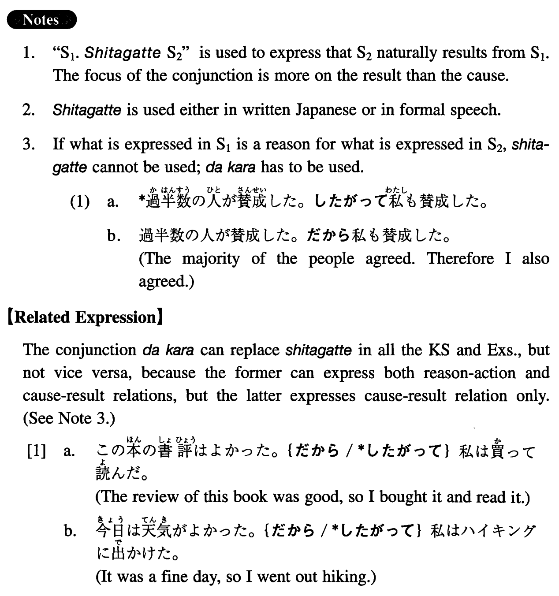

←
DoJG
→
したがって
(I. 395)
Example sentences
(ks).
予算が不足している。
したがって
この計画は実行できない。
The budget is insufficient. Therefore this plan cannot be implemented.
(a).
今週は重役達は朝から晩まで会議で忙しい。
したがって
好きなゴルフをする暇もない。
This week the executives are busy attending meetings from morning till night. Therefore they don't even have time to play their favourite golf.
(b).
運動をすると、エネルギーを使う。
したがって
太らない。
If you do exercise, you use energy. Accordingly you don't gain weight.
(c).
日本の車は故障が少ない。
したがって
よく売れる。
Japanese cars have fewer troubles. Therefore they sell well.
(d).
彼女は日本に五年も住んでいた。
したがって
日本のことをよく知っている。
She lived in Japan for five years. Therefore she knows a lot about Japan.
(e).
日本では父親はあまり家にいない。
したがって
母親が子供の教育をすることになる。
In Japan fathers are seldom at home. Therefore mothers are in charge of their children's education.
Formation
Sentence1
したがって
Sentence2
雨がよく降る。
したがって
緑が多い
It rains a lot. Therefore there is a lot of greenery
